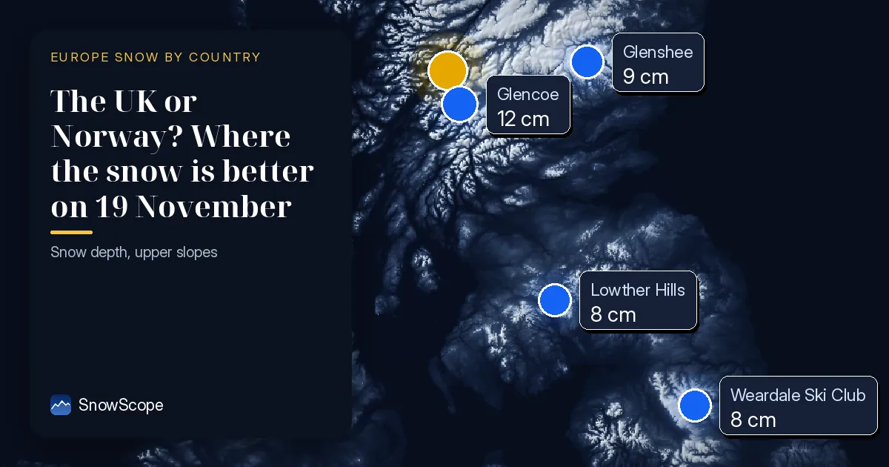

The UK or Norway? Where the snow is better on 19 November
10 % of the mapped high ground is white in the UK, against 89 % in Norway. The deepest resort in the UK has 16 cm; in Norway it is Riksgränsen with 167 cm.
See the live snow forecast for Nevis Range in the SnowScope appSnow depth, powder alerts and the 3D map, free.
Across the border
For a trip near the border this decides the direction: the snow is not where the map of borders would suggest, it is where the last storm went.
The white area in the UK stands at about 3,800 km² today, 980 km² less than yesterday. That is 10 % of the high ground we map in the UK.
| Country | White | Deepest resort | Next 7 days |
|---|---|---|---|
| UK | 10 % | Nevis Range | 12 cm |
| Ireland | 0 % | Ski Club Of Ireland | 0 cm |
| Norway | 89 % | Riksgränsen | 33 cm |

The neighbours today
For comparison, the neighbours on the same day: Ireland: 0 % white, deepest Ski Club Of Ireland with 0 cm, up to 0 cm in the week ahead; Norway: 89 % white, deepest Riksgränsen with 167 cm, up to 33 cm in the week ahead.

Shortlist for the weekend
Nevis Range leads with 16 cm on its upper slopes.
Next on the list: Glencoe (12 cm), Glenshee (9 cm), Weardale Ski Club (8 cm) and Lowther Hills (8 cm).
At Nevis Range: 5 cm of fresh snow over three days, 0 cm more expected by Sunday 22 November.
At Glencoe: 8 cm of fresh snow over three days, 0 cm more expected by Sunday 22 November.
Count 10 white resorts out of 30 in the UK today.
The rest of the shortlist: Glenshee: 9 cm on top, 12 cm in three days, 0 cm expected; Weardale Ski Club: 8 cm on top, 18 cm in three days, 0 cm expected; Lowther Hills: 8 cm on top, 14 cm in three days, 0 cm expected.
Forecast for the week
The week ahead could bring up to 12 cm, 0 cm of it in the next three days.
Tuesday 24 November stands out, with up to 8 cm in a day.
The second week adds up to 14 cm where it snows most.
The week in numbers
Day by day, the white area in the UK went: 16 November 5,740 km²; 17 November 5,870 km²; 18 November 4,300 km²; 19 November 3,800 km².
The deepest resort changed hands 2 times this week.
Snow depth by height
Climb and the snow gets deeper: between 0 and 500 m, under 1 cm on average, 2 % covered; between 500 and 1,000 m, 1 cm on average, 31 % covered; between 1,000 and 1,500 m, 8 cm on average, 100 % covered.
Snow on the ground
Below about 700 m the slopes are mostly green or brown. A week ago it was 4,940 km²: 1,140 km² has melted away since.
Where the fresh snow fell
Three-day totals peak at 10 cm, around the Southern Uplands, Glencoe and Glenshee and the Grampians.
About 1,680 km² received at least 5 cm.
Planning a day on the snow
Above 1,000 m the ground is almost fully white (100 % covered), so runs up there have a continuous base.
Between 500 m and 1,000 m the cover is patchy, about 31 % white: expect grass and stones between the snow.
Below 500 m the slopes are still almost bare.
Little new snow is expected in the next three days, so today's picture should hold for a weekend trip.
On the ground
The new snow freshens the upper slopes; lower down it may already be heavy or wet.
With more snow in the forecast, the next days should improve things further.
Tips for skiers
- Early-season snow is thin over rocks: ski the groomed runs first.
- Roads to the higher resorts may need winter tyres or chains.
- Check the resort's own lift status before you travel.
About these numbers
Resort snow depths are the deepest snow on the resort's upper slopes from the SnowScope snow model (about 1 km, run of 19 November); they are estimates for an area, not a measurement at one point. Station values are measurements on the date shown. Forecasts can change. Always read the official avalanche bulletin before going off-piste.
Cite this report
For research, teaching or the press: the numbers and charts are free to reuse under CC BY 4.0 with this citation.
SnowScope (2026), The UK or Norway? Where the snow is better on 19 November, https://snowscope.app/blog/en/2026/11/uk-snow-vs-neighbours-19-november-2026.html, accessed 2026-11-19
SnowScope (Atlas Labs). (2026, November 19). The UK or Norway? Where the snow is better on 19 November. SnowScope snow reports. https://snowscope.app/blog/en/2026/11/uk-snow-vs-neighbours-19-november-2026.html
BibTeX
@misc{snowscope2026uksnowvsneighbours19nove,
author = {{SnowScope (Atlas Labs)}},
title = {The UK or Norway? Where the snow is better on 19 November},
year = {2026},
month = nov,
howpublished = {\url{https://snowscope.app/blog/en/2026/11/uk-snow-vs-neighbours-19-november-2026.html}},
note = {Published 2026-11-19 13:23 UTC; accessed 2026-11-19}
}· CC BY 4.0 · Methods, data and tools →
Nevis Range: snow and temperature by height, this winter vs last (tools) →
Follow Nevis Range
Free: a message when fresh snow is coming, and the forecast every morning.
More snow reports

A slope map of Les Grands Montets and seven other ski areas shows how much of the ground is steeper than 30°, 35° and 40°, and why that line matters for avalanches.

Slovenia faces major snowfall over the next 7 days, with up to 53 cm expected. The heaviest falls arrive on 26 November. Data from 21 November.

Snow is falling on Slovenia's ski mountains today: about 37 cm on Kanin and 21 cm on Krvavec. Where the snow lies, how it compares with past winters, and the next snowy day.